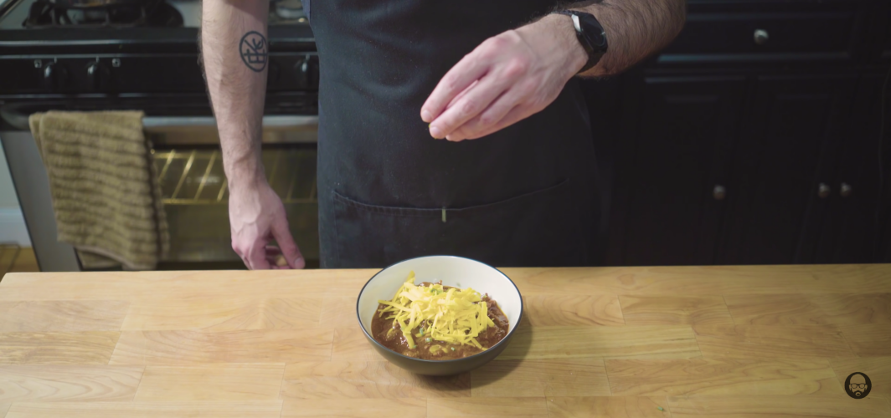

Mr. and Mrs. Tenorman Chili

Food Description
Nothing beats consuming a nice bowl of chili during a nice and chilly day (yes play on words was intended). However this chili recipe has a twist.
Instead of traditional meat, this recipe calls for the use of meat of Mr. and Mrs. Tenorman. According to Eric Cartman, this recipe results in one
of the best tasting chilis in the world a the best dish to serve revenge with.
P.S.We will not be using human meat in the real life version. According to ummm..sources, pork shoulder is the closest tasting meat to human so
that is what will be used.
Ingredients
Chili Ingredients
- Cascabella Chiles
- Guajillo Chiles
- Ancho Chiles
- 3 Cups Chicken Stock
- 1/2 Cup Corn Flour
- 1 Tbsp Dried Oregano
- 2 Tbsp Unsweetened Cocoa Powder
- 1 Tbsp Ground Cumin
- 1 Habanero
- 1 Jalapeno
- 1 Onion
- 1 Clove of Garlic
- Boneless Pork Shoulder
- 1 Pound of Uncured Chorizo
- 1 Mexican Beer (Modelo)
- (2) 14 Ounce Cans of Chopped Tomatoes
- Salt
- Pepper
- Cheddar Cheese
- Chives
Steps
For Chili
- Start by removing seeds and stems from chilies and cut them into 1 inch pieces. Place into dry fry pan and toast on a medium high heat until smoking slightly and fragrant.
- While pan is still hot add 1 ½ cups of chicken stock and bring to a bare simmer, cover and remove from heat and allow to steep for about 30 minutes.
- Place the pepper mixture in the bowl of a food processor and pulse a few times before adding ½ cup of corn flour for thickening, 1 Tbsp dried oregano, 2 Tbsp of unsweetened cocoa powder, and 1 Tbsp ground cumin. Process that for about 2 minutes or until smooth.
- In a separate bowl, combine 1 finely chopped habanero, 1 finely chopped jalapeno, 1 chopped onion and 1 clove of garlic, and set aside.
- Take boneless pork shoulder and cut into ½-inch pieces along with squeezing a pound of uncured chorizo out of it’s casing.
- Brown the chorizo over a medium high heat, rendering out all the fat, and breaking into small pieces. Remove chorizo and add pork shoulder to the brown in the sausage fat.
- emove pork shoulder and add our chopped vegetables. Once vegetables are cooked, deglaze with a full Mexican beer.
- Scrape all the good stuff off the bottom of the pot, add our spice paste, another 1 ½ cups of chicken stock, and (2) 14 ounce cans of chopped tomatoes, along with our meat back into the pot.
- Stir and partially cover and let simmer for 3-4 hours on a low heat until meat is fully cooked and the sauce is thickened. Add salt and pepper for taste.
- Serve with cheddar cheese and chives. Enjoy!